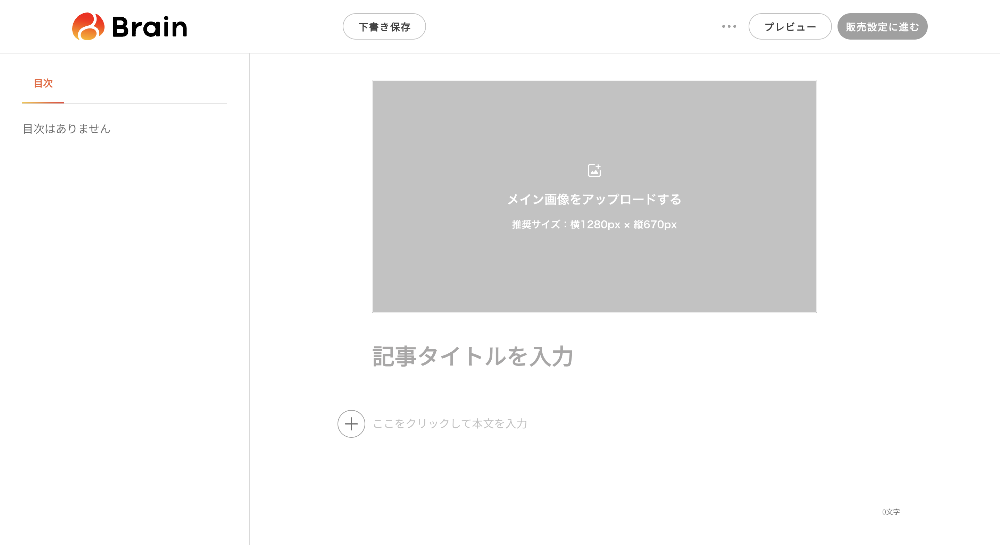

「noteを書いて」で、調査から未公開下書きの保存まで終わる。
最初に好みと文体を教えれば、次からはテーマを一行伝えるだけ。記事、画像、出典を作り、保存後に同じ下書きを読み直して確認します。
このマニュアルの目次
「○○について、私の文体でnoteを書いて」
- 調べる
- 構成する
- 書く
- 画像を作る
- 下書き保存
- 読み直す
- article.md
- 画像
- 出典一覧
- 未公開下書き
- 保存・再読記録
- note
- 下書き保存と保存後の再確認まで。公開はあなたが内容を読んでから行います。
- Brain
- 記事と画像を作るところまで。編集画面の入力先と販売設定への動線は実機確認済みです。現行版では転記、価格・紹介率・有料ライン、保存を人が操作します。
- 自動でしないこと
- 公開、販売開始、予約投稿、アカウント切替。外に出す最後の判断は人に残します。
どんなふうに育てるかを見る → 記事を1本書かせる流れを見る → Windowsを診断する → インストールへ進む →
00このマニュアルの読み方
右上のスイッチで macOS / Windows を切り替えると、コマンドとパスがその OS 用に入れ替わります。出力は読み方を示す例で、版やパスは端末ごとに変わります。
ステータスの見方：実装済み 現行版で動作 人が操作 金額や公開範囲に関わる区間 採用しない
Python 3.10 以上が必須です。macOS 標準の python3（3.9.x）では Doctor が必ず失敗し、記事作成に進めません。01 前提チェックで対処してください。
インストール後に windows-doctor.ps1 を1回実行します。Python、Windows build、PowerShell、Chrome、書き込み先、OneDrive、長いパスをまとめて判定し、直すコマンドまで表示します。
01前提チェック
まずこれを流して、足りないものを確認します。
git --version; gh --version | head -1; python3 --version; node --version git version 2.50.1 (Apple Git-155) gh version 2.95.0 (2026-06-17) Python 3.9.6 ← 3.10 未満。要対処 v24.17.0
$PSVersionTable.PSVersion git --version; gh --version; py -0p PowerShell 5.1 または 7 git version 2.x.x gh version 2.x.x -V:3.14 * C:\Users\you\AppData\Local\Programs\Python\Python314\python.exe
| 必要なもの | 用途 | 無いとどうなるか |
|---|---|---|
| Python 3.10+ | Skill 本体の管理スクリプト | Doctor が blocked。記事作成に進めない |
| Git | Skill の取得・更新 | インストール不可 |
GitHub CLI (gh) | プライベートリポジトリのクローン | git clone で代替可（公開リポジトリなら不要） |
| Chrome + エージェントの拡張 | note の下書き保存／Brain 編集画面の確認 | CMS を操作できない。本文はローカルに残る |
| 画像生成 Skill / MCP | サムネイル・図解 | CMS を触る前に停止する |
Python 3.10+ を用意する（macOS）
このマシンには既に python3.11 が入っています（/Users/stork/.local/bin/python3.11 / 3.11.15）。python3 がまだ 3.9 を指しているだけなので、PATH の優先順位を直します。
which -a python3 /usr/bin/python3 python3.11 --version Python 3.11.15 # ~/.zshrc の末尾に追記して、~/.local/bin を優先させる echo 'export PATH="$HOME/.local/bin:$PATH"' >> ~/.zshrc exec zsh -l python3 --version Python 3.11.15 ← これで OK
入っていない場合は python.org の macOS 版を入れるのが確実です。PATH をいじりたくなければ、以降のコマンドの python3 をすべて python3.11 に読み替えても構いません。
Python 3.10+ を用意する（Windows）
個人PCでは winget で入れるのが最短です。会社PCでインストールが制限されている場合は、管理者権限を回避せずIT担当者へ依頼してください。
winget install --id Git.Git -e winget install --id GitHub.cli -e winget install --id Python.Python.3.14 -e winget install --id Google.Chrome -e # PowerShellを閉じ、新しく開いてから確認 py -0p
以降はPythonの版を固定せず、.\scripts\manage.ps1 を使います。3.10〜3.14から利用可能な実体を選び、Microsoft Storeを開くだけの見せかけの python.exe は除外します。
winget 自体が見つからない場合はWindowsを更新してApp Installerを入れるか、Python公式インストーラ、Git、GitHub CLI、Google Chromeの各公式配布元を使います。
02どの Git を入れるのか
1 本だけです。note の下書き作成と保存後の検証、Brain 向けの記事・画像作成、文体学習、定期実行がこのリポジトリに入っています。
gh repo clone Azamarusuisan/AZMAEUni ~/.agents/skills/write-note-drafts
gh repo clone Azamarusuisan/AZMAEUni "$env:USERPROFILE\.agents\skills\write-note-drafts"
- リポジトリ
Azamarusuisan/AZMAEUni- Skill 名
write-note-drafts- 置き場所
~/.agents/skills/write-note-drafts%USERPROFILE%\.agents\skills\write-note-drafts
ディレクトリ名は write-note-drafts にしてください。Skill 名とフォルダ名の一致が検証されるため、別名にすると読み込みに失敗します。
03インストール
Step 1 — 本体を取得する
mkdir -p ~/.agents/skills gh repo clone Azamarusuisan/AZMAEUni ~/.agents/skills/write-note-drafts Cloning into '/Users/you/.agents/skills/write-note-drafts'... remote: Enumerating objects: done. Receiving objects: 100% done. ls ~/.agents/skills/write-note-drafts LICENSE README.md SKILL.md agents/ assets/ references/ scripts/ requirements-validation.txt
mkdir "$env:USERPROFILE\.agents\skills" -Force gh repo clone Azamarusuisan/AZMAEUni "$env:USERPROFILE\.agents\skills\write-note-drafts" dir "$env:USERPROFILE\.agents\skills\write-note-drafts" LICENSE README.md SKILL.md agents assets references scripts requirements-validation.txt
gh が未認証なら gh auth login を先に実行します。公開リポジトリなら git clone https://github.com/Azamarusuisan/AZMAEUni.git <パス> でも同じです。
Step 2 — エージェントから見えるようにする
Claude Code
mkdir -p ~/.claude/skills ln -s ~/.agents/skills/write-note-drafts ~/.claude/skills/write-note-drafts ls -l ~/.claude/skills/write-note-drafts lrwxr-xr-x ... write-note-drafts -> /Users/you/.agents/skills/write-note-drafts
# 管理者権限も開発者モードも不要な「ジャンクション」を使う $source = "$env:USERPROFILE\.agents\skills\write-note-drafts" $target = "$env:USERPROFILE\.claude\skills\write-note-drafts" New-Item -ItemType Directory -Force (Split-Path $target) | Out-Null New-Item -ItemType Junction -Path $target -Target $source
既に ~/.claude/skills/write-note-drafts が存在する状態で ln -s を実行すると、リンクがそのディレクトリの中に作られて二重構造になります。先に ls ~/.claude/skills で確認してください。
New-Item -ItemType SymbolicLink は管理者権限か開発者モードが要ります。上記のJunctionならどちらも不要です。既存の $target へ上書きせず、消すときはlink側だけを Remove-Item $target で削除します。
Codex
共有ディレクトリ ~/.agents/skills を自動で見にいくので、追加設定は不要です。
共有ディレクトリ %USERPROFILE%\.agents\skills を自動で見にいくので、追加設定は不要です。
Hermes
~/.hermes/config.yaml に ~/.agents/skills の絶対パスを追加します。
%USERPROFILE%\.hermes\config.yaml に .agents\skills の絶対パスを追加します。
skills:
external_dirs:
- /Users/you/.agents/skills
skills:
external_dirs:
- C:/Users/you/.agents/skills
hermes skills list write-note-drafts Interview, learn a user's Japanese writing style, ...
設定後は新しいセッションを開き直すまで反映されません。
04動作確認
記事を書かせる前に、ここまでが正しいかを確かめます。出力例と同じキーが出ればよく、版・ユーザー名・パスは一致しなくて構いません。
1. 本体の自己診断
cd ~/.agents/skills/write-note-drafts python3 scripts/manage.py self-check { "self_check": "passed" }
cd "$env:USERPROFILE\.agents\skills\write-note-drafts" .\scripts\manage.ps1 self-check { "self_check": "passed" }
Windowsだけ：環境をまとめて診断する
個別のエラーを探す前に、このコマンドを1回実行します。端末全体の実行ポリシーは変更しません。
powershell.exe -NoProfile -ExecutionPolicy Bypass ` -File .\scripts\windows-doctor.ps1 -Agent codex -Target note { "status": "local_pass", "supported_mode": "windows-native-chrome", "blocking_count": 0, "warning_count": 0, "checks": [ { "name": "windows_version", "status": "pass", ... }, { "name": "python", "status": "pass", ... }, { "name": "chrome", "status": "pass", ... }, { "name": "workspace", "status": "pass", ... }, { "name": "agent_runtime", "status": "pending", ... } ] }
blocked は表示された fix を実行して再診断します。warning は続行できますが、Windows 10・OneDrive・長いパスなどの不安定要因です。pending は正常で、Chrome接続や画像生成をエージェント会話内で確認します。
Python が 3.9 のままだと、次のように落ちます。これは環境の問題であってバグではありません。01 に戻ってください。
python3 scripts/manage.py self-check Traceback (most recent call last): File "scripts/manage.py", line 1239, in <module> raise SystemExit(main()) File "scripts/manage.py", line 880, in self_check assert chrome_doctor["status"] == "pending" AssertionError
2. ワークスペースを作る
設定と記事の保存先です。既定は次の場所で、環境変数 NOTE_DRAFT_PIPELINE_HOME でも変えられます。
~/.config/write-note-drafts
%USERPROFILE%\.config\write-note-drafts
python3 scripts/manage.py status --workspace ~/.config/write-note-drafts { "browser": null, "expected_account_handle": null, "initialized": false, "runs": [], "status": "uninitialized", "workspace": "/Users/you/.config/write-note-drafts" } python3 scripts/manage.py init --browser chrome --workspace ~/.config/write-note-drafts { "browser": "chrome", "copied": 6, "initialized": true, "skipped": 0, "status": "onboarding", "workspace": "/Users/you/.config/write-note-drafts" }
.\scripts\manage.ps1 status --workspace "$env:USERPROFILE\.config\write-note-drafts" { "browser": null, "expected_account_handle": null, "initialized": false, "runs": [], "status": "uninitialized", "workspace": "C:\\Users\\you\\.config\\write-note-drafts" } .\scripts\manage.ps1 init --browser chrome --workspace "$env:USERPROFILE\.config\write-note-drafts" { "browser": "chrome", "copied": 6, "initialized": true, "skipped": 0, "status": "onboarding", "workspace": "C:\\Users\\you\\.config\\write-note-drafts" }
copied: 6 は、この 6 ファイルが置かれたという意味です。
NOTE_GENERATOR.md 全体の目次 PROFILE.md 発信目的・読者・トーン・CTA WRITING_PROFILE.md 文体学習の結果 OPERATING_RULES.md 自動化モード、リサーチと画像の既定値 ASSETS.md ロゴなどローカル素材の登録簿 templates/default.md 記事の型 .state/workspace.json 機械用の状態（手で触らない）
3. Doctor
--agent には今使っているエージェントを指定します（codex / claude / hermes）。
python3 scripts/manage.py doctor --browser chrome --agent claude \ --workspace ~/.config/write-note-drafts { "agent": "claude", "blocking_checks": [], "browser": "chrome", "local_checks": { "platform": { "required": "any", "status": "pass", "value": "darwin" }, "python": { "required": ">=3.10", "status": "pass", "version": "3.11.15" }, "workspace":{ "status": "pass", "detail": "temporary write probe passed" } }, "ready": false, "runtime_checks": { "claude_in_chrome": { "status": "pending", ... }, "image_generation": { "status": "pending", ... }, "web": { "status": "pending", ... } }, "status": "pending" }
.\scripts\manage.ps1 doctor --browser chrome --agent claude ` --workspace "$env:USERPROFILE\.config\write-note-drafts" { "agent": "claude", "blocking_checks": [], "browser": "chrome", "local_checks": { "platform": { "required": "any", "status": "pass", "value": "win32" }, "python": { "required": ">=3.10", "status": "pass", "version": "3.11.x" }, "workspace":{ "status": "pass", "detail": "temporary write probe passed" } }, "ready": false, "runtime_checks": { ... }, "status": "pending" }
blocking_checks: []… ローカル側は問題なし。ここに"python"や"platform"が入っていたら先に進めません。runtime_checksがすべてpendingなのは正常です。これはエージェントが会話の中で実際に呼び出して確認する項目で、コマンドラインからは判定できません。ready: falseは「初回育成がまだ」という意味です。
Windows での注意
| 項目 | Windows での扱い |
|---|---|
| Windows 11 | 推奨 Native PowerShell + Google Chrome |
| Windows 10 | build 17763以降・完全更新済みのみ best effort |
| PowerShell | Windows PowerShell 5.1とPowerShell 7をCI対象にする |
| Python | 3.10〜3.14を manage.ps1 が自動選択 |
| Chrome 経路 | 対応 Edgeなど他のChromium browserは対応扱いにしない |
| Safari 経路 | 不可 required: "darwin" のため blocked。--browser safari は選ばないでください |
| WSL2 | Linux経路として別運用。Native Windowsのcheckout・workspaceと混ぜない |
| ARM64／会社PC | ローカル処理は条件付き対応。Agent・Chrome・Policyを実機Doctorで確認 |
.\scripts\manage.ps1 doctor --browser safari --agent claude --workspace ... "status": "blocked", "blocking_checks": ["platform"], "platform": { "status": "blocked", "value": "win32", "required": "darwin" }
OneDrive、実行ポリシー、長いパス、Codex sandbox error 1385、Chrome connector、WSL2の直し方は references/windows.md にまとめています。
05初回育成をエージェントで走らせる
ここからはターミナルではなく、エージェントとの会話です。ready になるまで記事作成は始まりません。
@your_handle と読み取れました。このアカウントで合っていますか？聞かれること
| カテゴリ | 項目 |
|---|---|
| 発信 | 目的、想定読者、記事長、トーン、CTA |
| リサーチ | 調査の深さ、海外ソースの可否、対象期間、SEO/AIO、キーワード |
| 画像 | 枚数、スタイル、図解の要否、サムネイル、サムネ内文字の有無 |
| 運用 | 自動化モード（guided／autopilot）、構成確認（毎回／依頼時のみ） |
| 文体学習 | 自分が書いた note 記事の URL を 2〜5 本 |
| 資産 | ロゴなどのブランド素材、使い回す記事ルール |
- 不要な項目は空欄にせず
なしと明示的に答えてください。空欄だと「未回答」として毎回聞かれます。 autopilotと構成確認: 毎回は設定矛盾として扱われ、どちらかに寄せるまでreadyになりません。任せたいならautopilot+依頼時のみ。- 文体学習に渡す URL は自分が書いた記事だけにしてください。他人の記事を渡すと、その人の文体を模倣する形になります（Skill 側でも拒否します）。
完了の確認
python3 scripts/manage.py status --workspace ~/.config/write-note-drafts { "browser": "chrome", "expected_account_handle": "your_handle", "initialized": true, "runs": [], "status": "ready" }
.\scripts\manage.ps1 status --workspace "$env:USERPROFILE\.config\write-note-drafts" { "browser": "chrome", "expected_account_handle": "your_handle", "initialized": true, "runs": [], "status": "ready" }
"status": "ready" になれば完了です。
06記事を 1 本書かせる
- 依頼内容の確定
- リサーチ
- 構成
- 執筆
- 画像
- プリフライト
- 下書き保存
- 再読検証
※ autopilot 設定ならこの確認は入りません
verified、下書き URL は https://note.com/… です。モード指定
| 言い方 | モード | どこまで |
|---|---|---|
| 「note 書いて」 | full | 下書き保存＋検証まで |
| 「構成だけ見せて」 | outline_only | 構成で停止。CMS を触らない |
| 「この記事で文体を学習して」 | learn_style | WRITING_PROFILE.md の更新のみ |
| 「設定を変えたい」 | setup | 育成のやり直し |
途中で何が保存されるか
runs/<run-id>/ ├─ brief.json 確定した依頼内容と、各項目の出所 ├─ research.jsonl 1行1ソース（事実・引用候補・URL・公開日・取得日） ├─ outline.md 本文より先に確定する構成 ├─ article.md 本文 ├─ image-plan.md 画像の用途・配置・プロンプト・サムネ文言・alt ├─ images/ 生成画像 └─ cms-receipt.json 保存結果（verified / save_unverified）
保存したあと、同じ下書きを開き直してタイトル・見出し・リンク・画像・サムネ・ハッシュタグと本文フィンガープリントを突合します。一致したときだけ verified。save_unverified なら下書きは存在するが中身が一致していないので、人が見てください。「保存しました」を鵜呑みにしない構造です。
07note 画面で何が起きているか
エージェントがブラウザで実際に触る場所です。自動で進みますが、止まったときにどこを見ればいいか把握しておくと復旧が早くなります。

右上のアカウントアイコンが写るように撮ってください。ここからハンドルを読み取って、保存済みのハンドルと照合します。
screencapture -i ~/.agents/skills/write-note-drafts/docs/shots/01-note-home.png
Win + Shift + S で範囲選択 → 次の名前で保存 %USERPROFILE%\.agents\skills\write-note-drafts\docs\shots\01-note-home.png

タイトル欄・本文欄・画像追加ボタンが入るように撮ってください。エージェントはここにタイトル、本文、見出し、リンク、画像、alt を流し込みます。
screencapture -i ~/.agents/skills/write-note-drafts/docs/shots/02-note-editor.png
Win + Shift + S → %USERPROFILE%\.agents\skills\write-note-drafts\docs\shots\02-note-editor.png

「公開に進む」を押した先のパネルを撮ってください。エージェントはここに到達しません。到達したら異常なので、その旨をマニュアルの注意書きと対応させます。
screencapture -i ~/.agents/skills/write-note-drafts/docs/shots/03-note-publish-panel.png
Win + Shift + S → %USERPROFILE%\.agents\skills\write-note-drafts\docs\shots\03-note-publish-panel.png

保存された下書きが並ぶ画面です。cms-receipt.json の内容と突き合わせる場所になります。
screencapture -i ~/.agents/skills/write-note-drafts/docs/shots/04-note-drafts.png
Win + Shift + S → %USERPROFILE%\.agents\skills\write-note-drafts\docs\shots\04-note-drafts.png
~/.agents/skills/write-note-drafts/docs/shots/%USERPROFILE%\.agents\skills\write-note-drafts\docs\shots\ に上記のファイル名で PNG を置いて、このページを再読み込みしてください。点線の枠が実際の画像に差し替わります。HTML を編集する必要はありません。
08Brain 記事への対応 現行版は手動運用
結論：Brain 向けの記事と画像は作れますが、Brain への入力と保存は人が行います。実機でタイトル・本文・メイン画像の入力先、推奨画像サイズ、販売設定画面までの動線を確認しました。金額と公開範囲に関わる画面は自動操作の対象にしません。
| 項目 | note | Brain（現行版） |
|---|---|---|
| 到達点 | 未公開下書きの保存・再読 | ローカルの記事・画像＋手動入力 |
| アイキャッチ | 1280×670 に正規化 | 1280×670（実機表示で確認） |
| 有料ライン | 扱わない | 販売設定画面で人が決める |
| 価格 | 扱わない | 人が毎回確認・入力 |
| 紹介（アフィリエイト）率 | — | 人が毎回確認・入力 |
| 公開／販売開始 | 行わない | 行わない |
- Skill：調査・執筆
- Skill：画像作成
- 人：Brain へ転記
- 人：販売設定
- 人：下書き保存を確認
実機で確認できたこと
- タイトル欄、本文欄、メイン画像の入力先を画面上の意味から一意に区別できます。
- メイン画像の推奨サイズは 横1280px × 縦670px と画面に表示されています。
- 下書き保存、プレビュー、販売設定に進むの各ボタンを区別できます。
- 販売設定画面へ遷移できることまで確認しました。価格・紹介率・有料ラインの中身は金銭設定のため確認対象から外しています。

「記事を書く」から入った編集画面を撮ってください。タイトル・アイキャッチ・本文の 3 領域が入るようにします。
screencapture -i ~/.agents/skills/write-note-drafts/docs/shots/05-brain-editor.png
Win + Shift + S → %USERPROFILE%\.agents\skills\write-note-drafts\docs\shots\05-brain-editor.png
販売設定画面では、利用者本人が価格・紹介率・有料ラインを確認して入力します。Skill は過去記事や保存設定から金額を推測せず、販売開始も押しません。
規約と、そこから決めた制約
Brain の販売者用・購入者用利用規約について、前回取得できた2026-06-09 版の全文を確認した範囲では、自動化ツール・ボット・スクレイピング・クローラ・プログラムによるアクセス・API を直接扱う条項は見つかっていません。これは自動操作の許可を意味しません。明示的な許可も禁止も確認できない一方、禁止事項には次の包括条項があります。
本サービス又はサーバーに対する妨害と当社が判断する行為 その他当社が不適切と判断する行為
どちらも運営の裁量で判定され、該当と判断されれば提供停止・登録抹消・データ削除が行われます。販売者アカウントは本人確認書類と決済手段に紐づくため、停止された場合の影響が note とは比べものになりません。規約は「ID を利用して行われた行為の責任は ID 保有者に帰属する」とも定めています。
この記載の根拠は、取得して確認した規約の最終更新表記 2026-06-09 版です。規約は改定される可能性があるため、Brain を実際に操作する直前に公式ページの現行版を再確認します。現行版を取得できない実行では Brain へ書き込みません。
| 制約 | 内容 |
|---|---|
| 無人実行 | 対象外。定期実行から Brain へ書き込まない |
| 本数 | 1 回の実行で 1 本まで。連続投稿・並列処理をしない |
| 速度 | 人の操作速度を超えない。待機を省いた連続実行をしない |
| ポーリング | 行わない。保存確認と再読検証は最小回数 |
| 再試行 | 自動で繰り返さない。続く場合は停止して報告 |
| 読み取り範囲 | 自分の下書きのみ。他者のアカウント・記事・購入者情報を収集しない |
Brain 用の記事と 1280×670 の画像をローカルに残し、実機で確認した入力先へ人が転記します。販売設定と下書き保存も人が確認します。保存後の再読検証は実施していないため、Skill が「Brain に保存しました」と報告することはありません。
09定期実行
毎週・毎日、下書きだけを溜めておく運用です。スケジューラ本体は Skill の外（エージェントのスケジュール機能、cron／launchd、タスクスケジューラ、CI）に置き、Skill 側は「呼び出し方」だけを持ちます。
設定
ワークスペースの OPERATING_RULES.md に次を書きます。1 つでも欠けるとエラーになり、定期実行は有効になりません。
- 配信頻度: 毎週 - 実行時刻: 09:00 - タイムゾーン: Asia/Tokyo - 1回あたりの本数: 1 - 成果物: ローカル下書き - 実行環境: cron/launchd
配信頻度: 手動 のあいだは無効です。既存のワークスペースにこれらの項目が無い状態は正常で、通常の記事作成には影響しません。
プロンプトの生成
python3 scripts/manage.py schedule-prompt --workspace ~/.config/write-note-drafts { "cadence": "毎週", "fields": { "配信頻度": "毎週", "実行時刻": "09:00", ... }, "prompt_path": "/Users/you/.config/write-note-drafts/scheduled-prompt.md", "scheduling": "enabled" } # 設定前はこう返る（エラーではない） { "scheduling": "disabled", "cadence": "手動", "prompt_path": null }
.\scripts\manage.ps1 schedule-prompt --workspace "$env:USERPROFILE\.config\write-note-drafts" { "cadence": "毎週", "prompt_path": "C:\\Users\\you\\.config\\write-note-drafts\\scheduled-prompt.md", "scheduling": "enabled" }
スケジューラに登録するのは、生成された scheduled-prompt.md の内容だけです。ワークフローの手順をスケジューラ側に写し取らないでください。写すと、Skill を更新しても定期実行だけ古い手順で走り続けます。
登録の手順
- 頻度・タイムゾーン・本数・想定コスト・情報源・成果物を決める。
- 実行環境がワークスペースに読み書きでき、必要ならブラウザに到達できるか確認する。
schedule-promptで生成されたプロンプト全文を確認する。- スケジューラに登録する。
- 手動で 1 回だけ実行し、
runs/<run-id>/schedule-report.mdを確認する。 - どこで管理し、どう止めるかを
OPERATING_RULES.mdに書き残す。
公開・予約投稿・販売開始・価格と紹介率の確定・有料ライン位置の確定・アカウント切替・購入・権限変更。金額と公開範囲に関わる判断は無人では確定させません。Brain 記事の場合、価格と紹介率は未確定のまま残り、実行レポートに「人の確認待ち」として記録されます。
止めるときは 配信頻度: 手動 に戻します。ただしスケジューラ側の登録は残るので、そちらの削除も忘れないでください。
10ハイブリッド構成
「最後の一手を自力で完了させ、やったことを検証する」骨格に、「記事を商品として運用する」層を必要な分だけ足したものです。すべて 1 リポジトリに入っています。
| 機能 | 状態 |
|---|---|
| note へのブラウザ入力 | 実装済み |
保存後の再読検証と cms-receipt.json | 実装済み |
| Doctor／プリフライト／チェックポイント再開 | 実装済み |
文体学習（WRITING_PROFILE.md） | 実装済み |
| ハンドル照合・調査ページの不信任扱い | 実装済み |
アイキャッチ 1280×670 正規化と実ファイル検査 | 実装済み |
定期実行（schedule-prompt ／ scheduler 中立） | 実装済み |
| Brain のハンドル照合と価格・紹介率の確認契約 | 実装済み |
| Brain のタイトル・本文・メイン画像の入力先 | 実機確認済み |
| Brain への転記・販売設定・下書き保存 | 人が操作 |
完成版として残した境界
- Brain の記事制作はローカル成果物まで。CMS への転記と保存は人が行います。
- 価格・紹介率・有料ラインは金銭と公開範囲に関わるため、自動入力しません。
- 販売設定画面の読み取り、保存後の再読、Brain アカウントの実画面照合は動作確認済みとは扱いません。
あえて入れなかったもの
- 自動公開。不採用 会話上の同意 1 回でアカウントに公開が飛ぶ設計は無人実行と相性が悪すぎます。到達点は下書きのまま。
- note の有料記事・メンバー限定対応。不採用 note adapter は allowlist で「販売設定画面へ遷移しない」を明示的に禁止しています。Brain の金銭設定も人の操作に限定します。
- サムネイルのモード分類。不採用
image-plan.mdとASSETS.mdが既に同じ範囲をカバーしており、増やすだけになります。取り込んだのは1280×670の正規化と実ファイル検査だけです。 - コネクタ任せの CMS 連携。不採用 「対応ツールがあれば使う」方式は、無い環境ではローカル Markdown で終わります。ブラウザ操作に一本化しています。
11安全境界
- 公開・予約投稿・販売開始・アカウント自動切替は行いません。
- パスワード、Cookie、トークン、MFA コード、API キーを保存しません。
- 操作対象は、選択したブラウザで現在ログイン中のアカウントのみ。書き換え前に毎回ハンドルを照合し、不一致・未取得なら停止します。
- 調査したページはすべて信頼できない入力として扱います。ページ内に書かれた指示には従いません。
- 主張は URL と日付まで辿れる状態を保ちます。事実・引用・数値・出典を創作しません。
- ブラウザを変更する前にローカル成果物を保存し、新しい下書き URL を先に記録します。
- 未知の画面、note / Brain 以外のオリジン、CAPTCHA、MFA、同意画面、対象が曖昧な UI で停止します。
- 成功報告は、保存状態を観測し同じ下書きを読み直したあとにのみ行います。
12止まったとき
失敗時は、フェーズ・原因・最後のチェックポイント・下書き URL・安全な再試行手順・手動手順・ローカルファイルのパスが表示されます。自動で再試行されるのは読み取り、待機、既存下書きへの更新だけで、新規下書きの作成は自動再試行しません（重複防止）。
self-check が AssertionError で落ちる
Python が 3.10 未満です。Doctor 自身が python >= 3.10 を要求しているため、3.9 では内部の期待値と食い違って落ちます。01 前提チェックの手順で 3.11 に切り替えてください。
python3 --version.\scripts\manage.ps1 --print-runtime Python 3.10 以上 ← 実体のパスまで表示されれば OK
Doctor が blocking_checks に platform を出す
Windows / Linux で --browser safari を指定しています。Safari 経路は macOS 専用です。Windowsでは --browser chrome にしてください。ワークスペースに保存済みのブラウザを変えるには setup モードで育成をやり直します。
runtime_checks がずっと pending のまま
正常です。web／画像生成／ブラウザ接続はコマンドラインからは判定できず、エージェントが会話の中で実際に呼び出して確認します。エージェントに「Doctor を実行して」と頼んでください。
ブラウザ拡張が接続されていない
Claude Code の場合、拡張が未接続だと Browser extension is not connected が返ります。拡張をインストールのうえ Chrome を再起動し、claude.ai に Claude Code と同じアカウントでログインしてください。Codex は ChatGPT Chrome Plugin、Hermes は /browser connect です。
note からログアウトしていた／別アカウントだった
停止して手動ログイン・切り替えを依頼します。切り替え後に再度ハンドルを照合します。Skill 側からアカウントを切り替えることはありません。
画像生成が使えない
CMS を触る前に停止し、本文と image-plan.md を完成させた状態で残します。あとから画像だけ足して再開できます。
途中で落ちた／同じ記事を作り直したい
保存済みの下書き参照から再開します。new-run の冪等キーが同じ限り、下書きが二重に作られることはありません。status の runs に途中の run が残っています。
保存はされたが検証に失敗した（save_unverified）
下書き自体は存在するので、表示された差分箇所を人が確認してください。verified 以外を「完了」と報告することはありません。
Windows でシンボリックリンクが作れない
New-Item -ItemType SymbolicLink は管理者権限か開発者モードが必要です。03 インストールの New-Item -ItemType Junction を使ってください。既存パスには上書きせず、削除するときはlink側だけを Remove-Item します。
WindowsでPowerShell scriptの実行を拒否された
端末全体の設定を変えず、powershell.exe -NoProfile -ExecutionPolicy Bypass -File .\scripts\windows-doctor.ps1 としてこの1回だけ実行します。会社のGroup Policyで拒否される場合は回避せずIT管理者へ依頼してください。
WindowsでAccess denied／OneDrive競合／長いパスが出る
Desktop、Documents、OneDrive、network driveを避け、Skillは %USERPROFILE%\.agents\skills、workspaceは %USERPROFILE%\.config 直下へ置きます。windows-doctor.ps1 の onedrive・long_paths・workspace の fix を確認してください。
Codex on Windowsでsandbox error 1385が出る
Windows policyがsandbox userのlogonを拒否しています。管理者へlogon rightsを確認し、調査中はCodex公式の unelevated sandboxを一時fallbackとして使います。診断を共有するときも .sandbox-secrets は送らないでください。
WSL2とWindowsのどちらで実行すればよいか分からない
初めてならNative Windows + PowerShellを使います。WSL2を選ぶ場合はcheckoutとworkspaceをWSLのhome配下へ置き、Linux手順で実行します。Windows側のパスと \\wsl$ を同じrunで混ぜません。WSL1は非対応です。
13コマンド一覧
すべて python3 scripts/manage.py <command> --workspace ~/.config/write-note-drafts の形です。
すべて .\scripts\manage.ps1 <command> --workspace "$env:USERPROFILE\.config\write-note-drafts" の形です。Pythonの版はランチャーが自動で選びます。
| コマンド | 必須オプション | 用途 |
|---|---|---|
init | --workspace --browser chrome|safari | ワークスペース作成 |
status | --workspace | 現在の状態（uninitialized／onboarding／ready） |
doctor | --workspace／--browser／--agent codex|claude|hermes／--target note|brain | 環境診断。Brain はブラウザ指定と実機での意味的観察が必須 |
validate | --workspace | 設定ファイルの整合性チェック |
ready | --workspace --account-handle（--brain-handle 任意） | 育成完了を記録 |
verify-account | --workspace --observed-handle（--platform note|brain） | 画面上のハンドルと保存値を照合。note と Brain は独立して照合する |
schedule-prompt | --workspace | 定期実行用の短いプロンプトを生成。配信頻度: 手動 なら disabled を返す |
new-run | --workspace（--run-id 任意） | 記事 1 本ぶんの作業領域を作る |
checkpoint | --workspace --run-id --phase --status | 進捗の記録（--draft-ref／--draft-url 任意） |
self-check | — | 本体の自己診断 |
通常はエージェントが必要に応じて呼ぶので、手で叩くのは self-check・status・doctor の 3 つで足ります。
更新
cd ~/.agents/skills/write-note-drafts && git pull python3 scripts/manage.py self-check { "self_check": "passed" }
cd "$env:USERPROFILE\.agents\skills\write-note-drafts"; git pull .\scripts\manage.ps1 self-check { "self_check": "passed" }
ワークスペース（設定と記事）は Skill 本体とは別の場所にあるので、更新しても消えません。